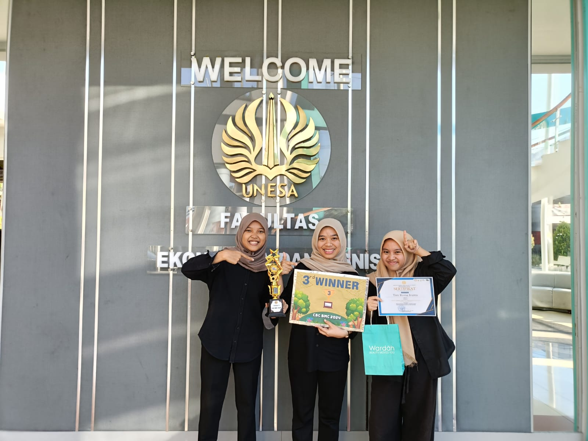

SMK Telkom Malang Juara 3 di Business Plan Competition Expo 4.0
Tim SMK Telkom Malang berhasil meraih juara 3 dalam ajang bergengsi Business Plan Competition Expo 4.0, yang diadakan oleh Fakultas Ilmu Sosial dan Politik Universitas Hang Tuah, Surabaya. Kompetisi ini diikuti oleh berbagai SMA dan SMK dari seluruh Indonesia, yang bertujuan untuk mengembangkan keterampilan berbisnis para siswa melalui penyusunan rencana bisnis kreatif dan inovatif.
Tim dari SMK Telkom Malang mengajukan rencana bisnis yang inovatif bertajuk "You C Pineapple", yang memanfaatkan limbah nanas menjadi produk bernilai jual tinggi. Rencana bisnis ini tidak hanya fokus pada aspek keuntungan, tetapi juga pada keberlanjutan dan pengelolaan lingkungan, sehingga mendapatkan apresiasi tinggi dari para juri.
Kompetisi ini diikuti oleh puluhan tim dari berbagai daerah di Indonesia. Para peserta diharuskan mempresentasikan rencana bisnis yang telah disusun di depan panel juri yang terdiri dari para ahli bisnis dan akademisi. Tim SMK Telkom Malang berhasil mendapatkan peringkat ketiga setelah menampilkan inovasi yang brilian dan kemampuan berpresentasi yang luar biasa.
"Kami sangat bangga dengan pencapaian ini. Semua persiapan dan kerja keras kami terbayarkan dengan hasil yang memuaskan. Kami berharap prestasi ini dapat menginspirasi lebih banyak siswa di SMK Telkom Malang untuk terus berinovasi dan berkarya," ujar salah satu anggota tim.